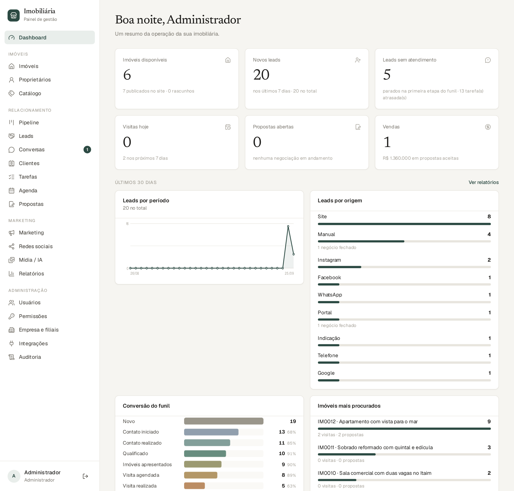
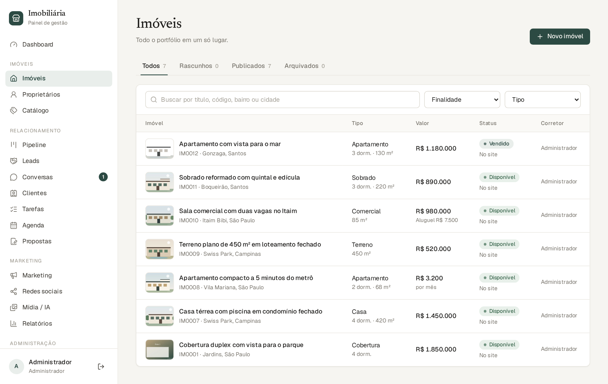
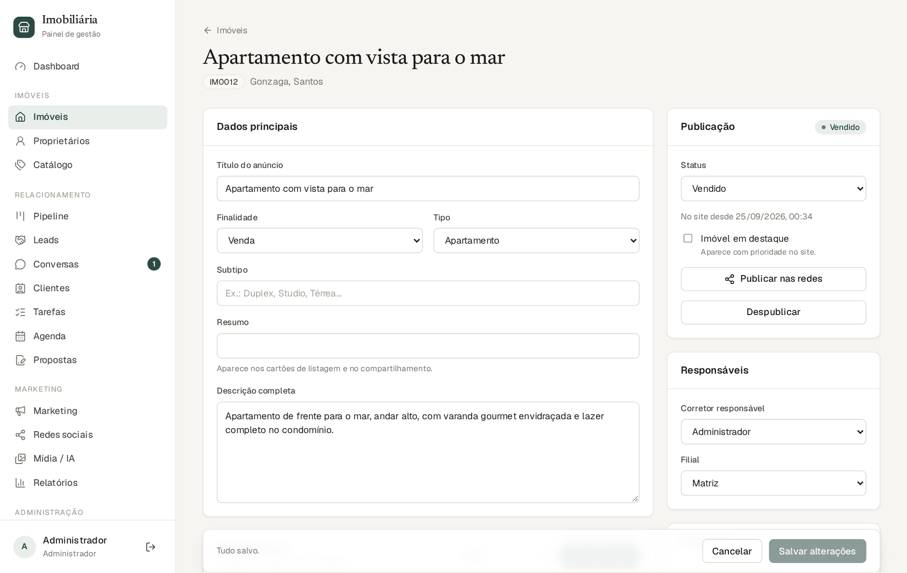
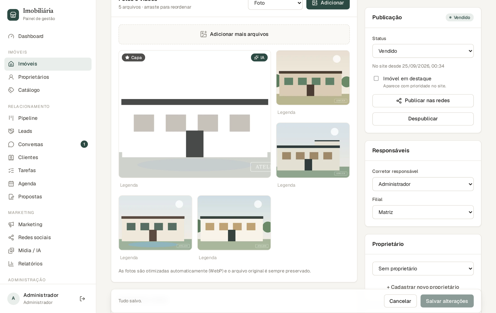
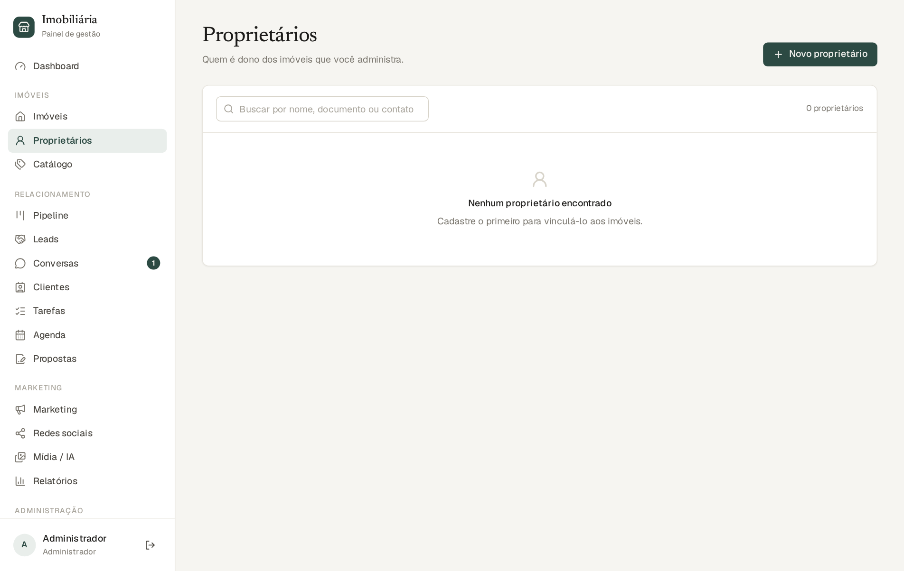
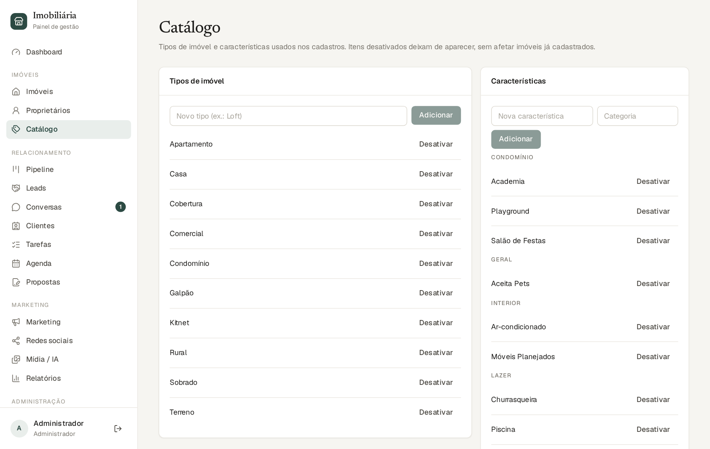

A plataforma é o sistema de gestão da sua imobiliária. Ela reúne, em um só lugar, tudo o que antes ficava espalhado em planilhas, cadernos, conversas de WhatsApp e cabeças de pessoas: o cadastro dos imóveis (com fotos e vídeos), o site público onde os clientes procuram imóveis, o controle dos contatos interessados (os “leads”), o atendimento pelo WhatsApp, as visitas, as propostas e a divulgação nas redes sociais.
Você não precisa entender de tecnologia para usá-la. Este manual explica tudo com linguagem simples, passo a passo, e mostra as telas reais do sistema. Se você acabou de começar, leia primeiro os capítulos 1 e 2; depois vá direto ao capítulo da sua rotina (o capítulo 14 indica o que cada perfil de usuário usa no dia a dia).
Quase tudo no sistema gira em torno de um caminho simples. Entender esse caminho ajuda a entender todas as telas:
O menu fica na lateral esquerda (no celular, atrás do botão ☰ no topo). Cada pessoa vê apenas os itens que o seu perfil permite. Este é o mapa completo:
| Grupo | Item | Para que serve |
|---|---|---|
| Início | Dashboard | Resumo do dia: números, gráficos e alertas. |
| Imóveis | Imóveis | Cadastro, fotos, publicação no site e nas redes. |
| Proprietários | Donos dos imóveis (dados de contato). | |
| Catálogo | Tipos de imóvel e características (piscina, churrasqueira…). | |
| Relacionamento | Pipeline | Quadro (kanban) do funil de vendas: arraste os leads entre as etapas. |
| Leads | Lista de todos os contatos de venda. | |
| Conversas | Atendimento pelo WhatsApp dentro do sistema. | |
| Clientes | Cadastro das pessoas (uma pessoa pode ter vários leads). | |
| Tarefas | O que precisa ser feito, com prazo. | |
| Agenda | Visitas marcadas, por semana. | |
| Propostas | Negociações: valores, contrapropostas e fechamento. | |
| Marketing | Marketing | De onde vêm os leads e quais campanhas dão resultado. |
| Redes sociais | Publicar e agendar imóveis no Instagram e no Facebook. | |
| Mídia / IA | Central de fotos: marca d’água e edição por inteligência artificial. | |
| Relatórios | Números de leads, funil, negócios e equipe. | |
| Administração | Usuários | Quem acessa o sistema. |
| Permissões | O que cada perfil pode fazer. | |
| Empresa e filiais | Dados da imobiliária, alertas, IA e agente de atendimento. | |
| Integrações | Conexão com o WhatsApp e com a Meta (Pixel). | |
| Auditoria | Registro de quem fez o quê e quando. |
painel.suaimobiliaria.com.br). Funciona em computador, tablet e celular.Quem cria o seu acesso é o administrador da imobiliária (veja o capítulo 13). A senha tem no mínimo 10 caracteres.
Na tela de entrada, clique em Esqueci minha senha, informe o seu e-mail e clique em Enviar link. Se o e-mail estiver cadastrado, você recebe um link para criar uma nova senha. Se o e-mail não chegar, olhe a caixa de spam ou peça ao administrador para redefinir a senha no menu Usuários.
Cada pessoa tem um perfil (também chamado de papel). O perfil define o que a pessoa enxerga e pode fazer. Os cinco perfis padrão são:
| Perfil | Para quem | Resumo do que pode fazer |
|---|---|---|
| Administrador | Dono ou responsável pelo sistema | Tudo, inclusive usuários, permissões, empresa, integrações e auditoria. |
| Gerente | Coordenação comercial | Imóveis, mídias, leads de toda a equipe, agenda, propostas (inclusive aceitar e fechar), marketing (só ver) e usuários. |
| Corretor | Quem atende e vende | Cadastrar e editar imóveis, enviar fotos, atender os seus leads, agendar visitas e criar propostas. |
| Marketing | Quem divulga | Ver imóveis, publicar no site, enviar e editar fotos com IA, ver todos os leads, gerenciar marketing, redes sociais e Pixel. |
| Atendimento | Recepção / pré-vendas | Ver imóveis e fotos, cadastrar e distribuir leads (de todos), mover o funil e agendar visitas. |
Em Permissões (capítulo 13) o administrador consulta exatamente o que cada perfil pode fazer. A tabela abaixo resume as permissões padrão de cada área:
| Área | Admin | Gerente | Corretor | Marketing | Atend. |
|---|---|---|---|---|---|
| Ver imóveis | ● | ● | ● | ● | ● |
| Criar e editar imóveis | ● | ● | ● | — | — |
| Publicar imóveis no site | ● | ● | — | ● | — |
| Enviar fotos | ● | ● | ● | ● | — |
| Editar fotos com IA | ● | ● | — | ● | — |
| Ver todos os leads | ● | ● | só os seus | ● | ● |
| Distribuir leads entre corretores | ● | ● | — | — | ● |
| Agendar e editar visitas | ● | ● | ● | — | ● |
| Criar propostas | ● | ● | ● | — | — |
| Aceitar, recusar e fechar propostas | ● | ● | — | — | — |
| Marketing e redes sociais | gerenciar | ver | — | gerenciar | — |
| Usuários, empresa, integrações, auditoria | ● | só usuários | — | — | — |
É a primeira tela depois do login. Ela responde, em segundos, à pergunta “como está a minha operação hoje?”.

| Cartão | O que mostra |
|---|---|
| Imóveis disponíveis | Quantos imóveis estão à venda ou para alugar agora, quantos estão publicados no site e quantos ainda são rascunhos. |
| Novos leads | Contatos que chegaram nos últimos 7 dias e o total geral. |
| Leads sem atendimento | Leads que continuam na primeira etapa do funil, ou seja, ninguém trabalhou ainda; mostra também as tarefas atrasadas. |
| Visitas hoje | Visitas marcadas para hoje e para os próximos 7 dias. |
| Propostas abertas | Negociações em andamento e o valor somado. |
| Vendas | Propostas aceitas e o valor total. |
Um corretor vê nesses cartões apenas os números dos próprios leads.
O quadro Precisa de atenção lista situações que pedem uma ação sua, das mais urgentes para as menos urgentes. Clique em uma linha para ir direto ao assunto. Exemplos: lead novo esperando atendimento, cliente esperando resposta no WhatsApp, tarefas atrasadas, visita sem confirmação, proposta vencendo. O administrador pode ajustar os prazos desses alertas (capítulo 12).
Ao lado, Atividade recente mostra as últimas ações feitas no sistema (quem fez o quê).
O cadastro de imóveis é o coração do sistema: tudo o que você divulga, atende e vende começa aqui.

IM0012). Use-o para conversar com clientes e colegas; o cliente também pode digitá-lo no WhatsApp.
| Bloco | O que preencher |
|---|---|
| Dados principais | Título do anúncio (é o que aparece no site), finalidade, tipo e subtipo, resumo curto e descrição completa. Escreva para o cliente: destaque o que torna o imóvel especial. |
| Ambientes e áreas | Dormitórios, suítes, banheiros, vagas de garagem e as áreas (total, útil, construída e do terreno, em m²). |
| Valores | Valor de venda, aluguel mensal, condomínio e IPTU. O valor mínimo de negociação é interno: nunca aparece no site nem para o cliente. |
| Endereço | CEP, endereço, número, complemento, bairro, cidade e UF. Por segurança, o site mostra só o bairro e a cidade; o endereço completo é informado durante o atendimento. |
| Características | Marque tudo o que o imóvel oferece (piscina, churrasqueira, academia…). As opções vêm do Catálogo. Elas aparecem no site e ajudam o sistema a sugerir imóveis parecidos. |
| Publicação (lado direito) | Situação do imóvel (status), botão de publicar/despublicar e botão de divulgar nas redes. |
| Responsáveis | Status, corretor responsável (os leads desse imóvel vão para ele) e filial. |
| Proprietário | Escolha o dono do imóvel (veja 4.7). Somente quem edita imóveis enxerga esse dado. |
| Histórico | Registro das alterações: quem mudou o quê e quando. |
| Status | Significado | Aparece no site? |
|---|---|---|
| Rascunho | Em preparação. Ainda não foi publicado. | Não |
| Disponível | À venda ou para alugar. | Sim, se publicado |
| Reservado | Há uma proposta aceita; aguardando fechar. (O sistema muda sozinho quando uma proposta é aceita.) | Sim, se publicado |
| Vendido / Alugado | Negócio fechado. (Mudança automática ao fechar a proposta.) | Some das listas; quem tem o link vê um aviso de que já foi negociado |
| Inativo | Fora de circulação por um tempo. | Não |
| Arquivado | Encerrado, mas mantido no histórico. | Não |
Na ficha do imóvel, o bloco Fotos e vídeos guarda todos os arquivos. Boas fotos são o que mais vende: capriche.

| Tipo | Formatos | Tamanho máximo |
|---|---|---|
| Foto | JPG, PNG, WebP, AVIF | 25 MB |
| Planta | Imagem ou PDF | 25 MB |
| Tour 360° | Imagem | 40 MB |
| Vídeo | MP4, WebM | 300 MB |
| Documento | 25 MB |
Cada imóvel aceita até 100 arquivos.
Para o imóvel aparecer no site, ele precisa ser publicado. O sistema exige o mínimo para um anúncio decente:
Em Imóveis → Proprietários ficam os donos dos imóveis. Clique em Novo proprietário e preencha: tipo (pessoa ou empresa), CPF ou CNPJ, nome, e-mail, telefone, WhatsApp, cidade, endereço, UF e observações. Depois, escolha o proprietário na ficha de cada imóvel. Esses dados são internos e só aparecem para quem tem permissão de editar imóveis.

Em Imóveis → Catálogo ficam as listas usadas no cadastro: tipos de imóvel (casa, apartamento, terreno, sala comercial…) e características (piscina, academia, portaria 24 h…). Você pode adicionar itens novos e desativar os que não usa. Itens desativados deixam de aparecer nos cadastros novos, mas não afetam imóveis que já os usam.
